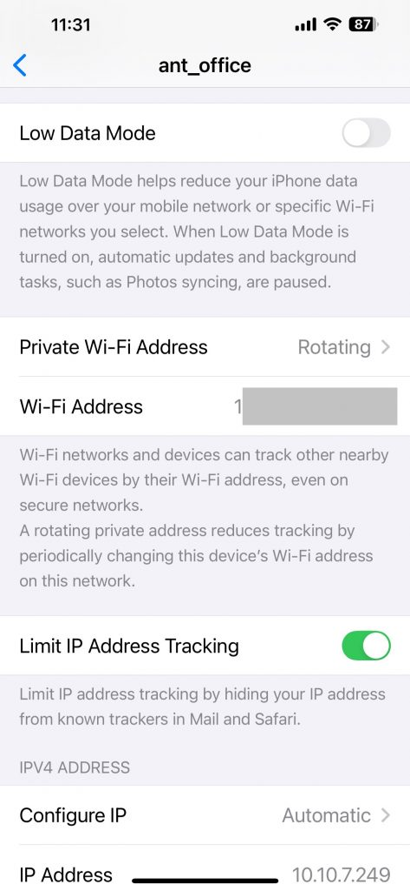

Enable SNACBox on Home Router
- Disconnect the USB Network Dongle from Laptop/Tablet/Smart Phone
- Disconnect the SNACBox LAN port from the USB Network Dongle
- Log in to the home router and disable DHCP
Note: Consult the Home Router supplier's web page for information on how to do this.
Note: DNS configuration may be necessary if the Home Router is set to secure DNS.
- Connect the SNACBox LAN port to the Home Router Network port.
Step 2
Set up admin devices
Connect at least two wireless devices (Computer, Tablet, Smart Phone) to Home WiFi
If you're using a mobile device (iOS, macOS, or Android) make sure to configure the WiFi connection's Private Wi-Fi Address to 'Fixed'


Note: These devices will automatically be enrolled into the 'No Access' rating.
- Open a web browser and go to http://192.168.12.1
- Login to SNACBox, User = root, Password = xxxxxx
- Now set the Rating to '18-Rated' for both admin devices

4. Once the admin devices have been enabled, proceed to step 3 to enable security and set the time.
Step 3
Enable SNACBox security
Goto Webguard -> Web Access -> 'Configuration'
Tick 'Enable Enhanced Security'
Note: Only needed if you wish to completley lock down all new device network access and addition access to the internet. If not ticked G-Rated web access will be available along with full internet access. G-Rated web access can be bypassed on the local device unless the device has been enrolled, while full internet aceess still remains.
Set Time
Click on 'System -> System'
Find the 'Timezone' dropdown list
Select the correct timezone
Device Setup
Now everything should be set up, and all devices connected to the Home WiFi should be appearing in the 'Device Access' web interface. All devices will automatically be enrolled on the 'No Access' rating.
- Enable devices on the home network
- https://192.168.12.1 -> Web Guard -> Web Access -> Device Access
- All devices trying to access the Home WiFi will have a 'No Access' rating automatically applied to them, but will have a 'Captive Portal' webpage appear showing their IP address.

4. Now find that device on the list of devices in 'Device Access' and assign it the necessary access rights (G, PG, 12, 15, 16 or 18).
The PDF contains detailed information regarding age rated filter configuration SNACBox Age Rated Filters.pdf